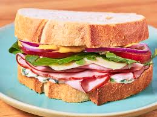

Dang good hammy sammy

Description
Sometimes your worst or, in this case, best creations come out the desperate combination of random ingredients in your fridge during your lunch break. In my opinion this one is a winner. I love a sandwich, but I also love the sweet and savory combo of prosciutto, arugula and fig jam. It brings together salty meat, bitter greens cut with acidy from the lemon, and sweet jammy fig. Almost a perfect flavor combo, but its missing a spicy element. The Dang Good Hammy Sammy was inspired by these flavors and takes your work from home lunch up a notch with salty ham (get the stuff from the deli counter - trust me), sour and tangy green apple slices for CRONCH factor 5000, a drizzle of honey for a sweet and savory juxtaposition, smoky mayo for a slight spice and dressed arugula with lemon juice/salt/pep.
Ingredients
- 2 slices of Crusty Sandwich bread
- 2 slices of Ham off the bone
- 2 tbs Smoky mayo (Molly Baz Recipe)
- 1-2 slices provolone
- 1/4 Granny smith apple
- Honey
- 1/2 Cup arugula
- Lemon wedge
- Salt
- Pepper
Steps
- Do some prep:
- Cut lemons into wedges
- Gather all ingredients
- Make the smoky mayo
- Slice the granny smith apple into slices
- Toast the two slices of sandwich bread to desired toastiness with 1-2 slices of provolone on top of one slice. Leave one slice bare.
- Once toasted, slather the non-cheesy slice of bread with desired amount of smoky mayo
- Layer thinly sliced apple slices on top of the cheesy slice of bread
- Tear and layer ham slices on the smoky mayo slice of bread
- Place arugula on top of green apples, squeeze fresh lemon juice over arugula
- Season with salt and pepper
- Put ur hammy sammy together